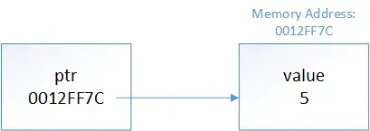

指针是 C++ 中的历史遗留产物之一，也是很多人学习C++时容易卡壳的地方。但是，稍后你会看到，其实指针并不可怕。
实际上，指针的行为和左值引用是很像的。但是在我们继续介绍之前，先来左一些准备工作。
考虑下下面代码：
char x {}; // chars use 1 byte of memory这行定义在生成代码时，RAM中的一段内存就会被指定给该对象。对于这个例子来说，假设变量x所用的内存地址为140。那么每当我们在表达式或者语句中使用x时，程序会自动地到内存地址140的地方去取值。
这么做最大的好处是我们无需关心内存地址的指定和使用，也不需要关心存放对象值使用了多少你村。我们只需要通过变量的标识符(identifier)也就是变量名即可，编译器会自动将其转换为对应的内存地址。编译器为我们代劳了全部的寻址工作。
对于引用来说也是这样：
int main()
{
char x {}; // assume this is assigned memory address 140
char& ref { x }; // ref is an lvalue reference to x (when used with a type, & means lvalue reference)
return 0;
}因为 ref 是 x 的别名，所以任何使用ref的地方，程序仍然会到内存地址140的地方去取值。编译器同样为我们代劳了寻址的过程，我们无需操心。
取地址运算符 (&)#
尽管在默认的情况下，变量的地址并不会暴露给用户，但该地址实际上是可以获取的。 取地址操作符 & 就可以返回其操作数的地址，非常简单：
#include <iostream>
int main()
{
int x{ 5 };
std::cout << x << '\n'; // print the value of variable x
std::cout << &x << '\n'; // print the memory address of variable x
return 0;
}在笔者的电脑上返回如下结果：
5
0027FEA0
在上面的例子中，我们使用取地址运算符来获取变量x的地址并将其打印处理。内存地址通常是以十六进制值的形式打印的（参考5.3 - 数值系统（十进制、二进制、十六进制和八进制）了解十六进制的内容），但通常不包括前缀0x。
对于使用内存数超过一个字节的对象，取地址会返回该段内存的首地址（第一个字节）。
解引用运算符*#
仅仅获得变量的地址，往往不是很有用。
对于一个地址来说，最有用的操作是获取它存放的值。解引用运算符（也叫间接访问运算符），可以返回一个地址存放的值（作为左值返回）：
#include <iostream>
int main()
{
int x{ 5 };
std::cout << x << '\n'; // print the value of variable x
std::cout << &x << '\n'; // print the memory address of variable x
std::cout << *(&x) << '\n'; // print the value at the memory address of variable x (parentheses not required, but make it easier to read)
return 0;
}在笔者机器上返回下面内容：
5
0027FEA0
5
这个程序非常简单。首先我们声明了一个变量x并且打印出它的值。然后我们打印出了变量x的地址。最后，使用解引用运算符从变量x的地址获取值（就是x的值），然后打印出来。
获取变量的内存地址，然后立即解引用该地址以获得值，这其实也不算是什么有用的操作(毕竟，我们可以直接访问变量的值)。
不过，在了解取地址和解引用之后，我们可以开始介绍指针了。
指针#
指针可以看做是一个持有内存地址的对象（通常是其他对象的地址）。这使得我们可以在后面的代码中使用该地址。
和使用&定义引用的做法类似，指针类型使用*来定义：
int; // a normal int
int&; // an lvalue reference to an int value
int*; // a pointer to an int value (holds the address of an integer value)要创建指针变量，只需定义一个指针类型的变量:
int main()
{
int x { 5 }; // normal variable
int& ref { x }; // a reference to an integer (bound to x)
int* ptr; // a pointer to an integer
return 0;
}注意，这个星号是指针声明语法的一部分，而不是使用解引用操作符。
指针的初始化#
和普通的变量不同，指针默认是不初始化的。一个没有被初始化的指针，有时称为野指针。野指针中存放的是一个无用的地址，对野指针解引用会导致未定义行为。因此，我们一定要将指针初始化为一个已知的值。
int main()
{
int x{ 5 };
int* ptr; // 一个未初始化的指针 (存放这无效地址)
int* ptr2{}; // 一个空指针 (稍后讨论这种情况)
int* ptr3{ &x }; // 指针，初始化为变量x的地址
return 0;
}由于指针保存的是地址，所以其初始化值必须是一个地址。通常，指针用于保存另一个变量的地址(可以使用取地址操作符(&)获取)。
一旦我们有了一个持有另一个对象地址的指针，我们就可以使用解引用操作符*来访问该地址的值。例如:
#include <iostream>
int main()
{
int x{ 5 };
std::cout << x << '\n'; // 打印变量 x 的值
int* ptr{ &x }; // ptr 保存着 x 的地址
std::cout << *ptr << '\n'; // 使用解引用操作符打印该地址的内容
return 0;
}输出结果：
5
5
形象一点来看，上面的代码片段是这样的：

这就是指针名称的由来——ptr 保存着x 的地址，所以我们说ptr 是“指向x 。
就像引用的类型必须匹配被引用对象的类型一样，指针的类型必须匹配被指向对象的类型:
int main()
{
int i{ 5 };
double d{ 7.0 };
int* iPtr{ &i }; // ok: a pointer to an int can point to an int object
int* iPtr2 { &d }; // not okay: a pointer to an int can't point to a double
double* dPtr{ &d }; // ok: a pointer to a double can point to a double object
double* dPtr2{ &i }; // not okay: a pointer to a double can't point to an int
}除了一个例外，我们将在下一课讨论，用字面量初始化指针是不允许的：
int* ptr{ 5 }; // 不可以
int* ptr{ 0x0012FF7C }; // 不可以, 0x0012FF7C 被看做整型字面量指针和赋值#
在谈论指针的赋值时，可能有两种含义：
- 改变指针的值使其指向其他地址（给指针赋值一个新地址）；
- 改变指针所指内容的值（给指针解引用的结果赋新值）。
首先，让我们看看指针被更改为指向另一个对象的情况:
#include <iostream>
int main()
{
int x{ 5 };
int* ptr{ &x }; // ptr 初始化为指向 x
std::cout << *ptr << '\n'; // 打印地址值(x的地址)
int y{ 6 };
ptr = &y; // // ptr 更改为指向 y
std::cout << *ptr << '\n'; // 打印地址值 (y的地址)
return 0;
}打印：
5
6
在上面的例子中，我们定义了指针ptr 并用x的地址初始化它。对指针解引用以打印被指向的值(5)。然后使用赋值操作符将ptr 保存的地址更改为y的地址。然后再次解引用该指针以打印被指向的值(现在是6 )。
现在让我们看看如何使用指针来改变被指向的值：
#include <iostream>
int main()
{
int x{ 5 };
int* ptr{ &x }; // initialize ptr with address of variable x
std::cout << x << '\n'; // print x's value
std::cout << *ptr << '\n'; // print the value at the address that ptr is holding (x's address)
*ptr = 6; // The object at the address held by ptr (x) assigned value 6 (note that ptr is dereferenced here)
std::cout << x << '\n';
std::cout << *ptr << '\n'; // print the value at the address that ptr is holding (x's address)
return 0;
}输出结果：
5
5
6
6
在这个例子中，我们首先定义了指针ptr，它的初始化为变量x的地址，然后打印了 x 和 *ptr 的值(5)。因为*ptr 返回的是左值，所我们可以把它用在赋值号的左侧，这样就可以将ptr 所指的变量的值修改为 6。然后，再次打印 x 和 *ptr以便确定我们的修改是否生效。
指针和左值引用很像#
指针和左值引用的行为类似。考虑下面的程序：
#include <iostream>
int main()
{
int x{ 5 };
int& ref { x }; // get a reference to x
int* ptr { &x }; // get a pointer to x
std::cout << x;
std::cout << ref; // use the reference to print x's value (5)
std::cout << *ptr << '\n'; // use the pointer to print x's value (5)
ref = 6; // use the reference to change the value of x
std::cout << x;
std::cout << ref; // use the reference to print x's value (6)
std::cout << *ptr << '\n'; // use the pointer to print x's value (6)
*ptr = 7; // use the pointer to change the value of x
std::cout << x;
std::cout << ref; // use the reference to print x's value (7)
std::cout << *ptr << '\n'; // use the pointer to print x's value (7)
return 0;
}程序运行结果：
555
666
777
在上面的程序中，我们创建了一个值为5的普通变量x，然后创建一个左值引用和一个指向x的指针。接下来，我们使用左值引用将值从5更改为6，并说明我们可以通过所有三个方法访问更新后的值。最后，我们使用解引用的指针将值从6改为7，并再次表明我们可以通过所有三种方法访问更新后的值。
因此，指针和引用都提供了间接访问另一个对象的方法。主要的区别在于，对于指针，我们需要显式地获取要指向的地址，并且显式地解引用指针来获取值。对于引用，地址和解引用都是隐式进行的。
指针和引用之间还有一些值得一提的区别：
- 引用必须被初始化，指针并不是必须初始化（但是你应该初始化）；
- 引用不是对象，指针是对象；
- 引用不能被重新设置（修改引用使其绑定到其他对象），指针则可以被修改指向其他对象；
- 引用总是绑定到某个对象，指针可以不执行任何对象；
- 引用是”安全“的（除了悬垂引用），指针则是危险的。
取地址运算符返回的是一个指针#
需要注意，取地址操作符 &返回的并不是地址的字面量，它返回的是一个指向操作数地址的指针，该指针的类型取决于参数的类型（例如，获取整型变量的地址返回的是整型指针）。
请看下面的例子：
#include <iostream>
#include <typeinfo>
int main()
{
int x{ 4 };
std::cout << typeid(&x).name() << '\n'; // print the type of &x
return 0;
}在 Visual Studio 中会打印如下内容：
int *
如果是gcc，则会打印“pi” (指向int的指针——pointer to int)。因为 typeid().name() 的结果取决于编译器（typeid 运算符），所以它的打印结果可能是不同的，不过意思是一样的。
指针的大小#
指针的大小取决于该可执行程序编译的体系结构——32位可执行程序使用32位地址——则一个指针在32位机器上的大小是4个字节。对于64位可执行程序，指针大小为64位（8字节）。注意，不论指针所指对象的大小是多少，指针本身的大小总是符合上面的规则。
#include <iostream>
int main() // 假设为32位程序
{
char* chPtr{}; // char 为1个字节
int* iPtr{}; // int通常是4字节
long double* ldPtr{}; // long doubles 通常是8字节或12字节
std::cout << sizeof(chPtr) << '\n'; // 打印 4
std::cout << sizeof(iPtr) << '\n'; // 打印 4
std::cout << sizeof(ldPtr) << '\n'; // 打印 4
return 0;
}指针的大小总是相同的。这是因为指针只是一个内存地址，而访问内存地址所需的比特数是恒定的。
悬垂指针#
就像悬垂引用一样，悬垂指针是保存不再有效的对象地址的指针(例如，对象已被销毁)。对悬浮指针的解引用将导致未定义行为。
下面是一个创建悬浮指针的例子:
#include <iostream>
int main()
{
int x{ 5 };
int* ptr{ &x };
std::cout << *ptr << '\n'; // valid
{
int y{ 6 };
ptr = &y;
std::cout << *ptr << '\n'; // valid
} // y goes out of scope, and ptr is now dangling
std::cout << *ptr << '\n'; // undefined behavior from dereferencing a dangling pointer
return 0;
}程序运行结果：
5
6
6
但是，结果也可能不是上面这样，因为 ptr 所指的对象在离开作用域时(内层语句块)以及被销毁了，此时的ptr是一个悬垂指针。
小结#
指针是保存内存地址的变量。可以使用解引用运算符对它们进行解引用，以获取指针所持有的地址的值。对野指针或悬垂指针(或空指针)的解引用会导致未定义行为，并可能导致应用程序崩溃。
指针比引用更灵活，也更危险。我们将在接下来的课程中继续探讨这个问题。